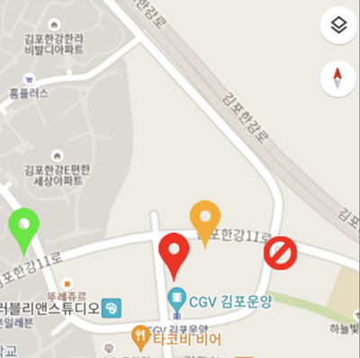
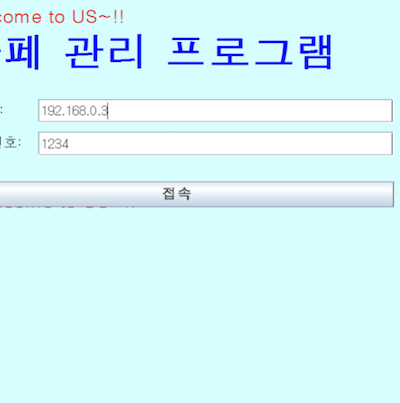
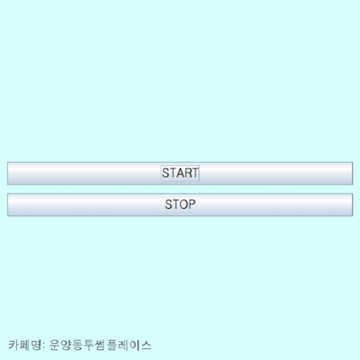

Implemented Functions
|

|
A function to Load the Number of People in each Cafe
You can search the population number from a cafe near you. You can also see if they are currently open.
|
|

|
A function to Sign-In and Sign-Up
You can log in to the cafe-only program. If you are not yet a member, you can sign up.
|
|

|
A function to Count People
If you click 'START', face recognition is performed periodically to count the population.
|
Things to Contribute to Society
Since you can see at a glance how many seats are filled in the cafes around you, you can easily decide which cafe to go to for a break and avoid wandering around as much as possible. It is estimated that it will be useful not only in cafes, but also in restaurants, banks, and community centers.
Background and Purpose
I visited the cafe to take a break, but the place was already full, so I had to find another cafe. It's also cumbersome to call the cafe and ask if it's full every time. So, to solve this problem, we implemented a program to check the number of people in a cafe using Python OpenCV.
What I Learned
- I learned how to use OpenCV in Python.
- I learned how to link Java programs and Python programs.
- I learned how to use the asynchronous method with Multi-Thread in Java and the structure of Multi-Threading.
- I learned how to implement a client with Java Swing.
- I learned how to embed Google Maps in Android.
- I learned how to implement a client in Android.
- I learned how to build a server with Java, build a database with MySQL, and connect with JDBC.
Process
- I made a cafe-only program based on Java Swing and a user-only program based on the Android app. At this time, I put Google Maps on the app screen.
- I built a server with Java, and the database was built with MySQL and then linked with JDBC. However, there was no response when the cafe program delivered information. So, as a result of searching on Google, I made the cafe program to inherit Thread in order to exchange information with the server, but I found out that in order for a multi-thread to share a variable value right away, I need to use volatile for the variable. I was able to solve the problem by using volatile.
- I linked the Python program with the Cafe program and then make the Python program count the population by face recognition, which was the most difficult.
- So, I found an example of face recognition using OpenCV on Google and modified it to count the population after analyzing the source code.
- And, I referred the source code to link the Python program with the cafe program after finding an example of running a Python program in a Java program on Google.
- In this way, I was able to implement the program I wanted.
A thing to have Done my Best to Strengthen my Abilities
Implementing functions to recognize face and count population using OpenCV in Python and linking with Java Swing
Overall Structure
Used Skills
Android, Google Map, Python, OpenCV, Java, TCP, MySQL, AWS
Development Environment
Eclipse IDE, Android Studio, Python IDLE, PHPMyAdmin